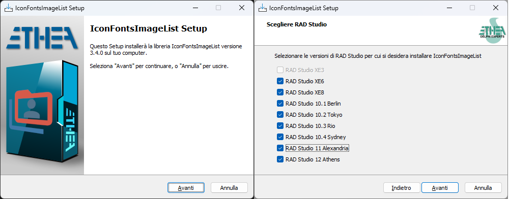
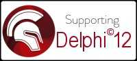
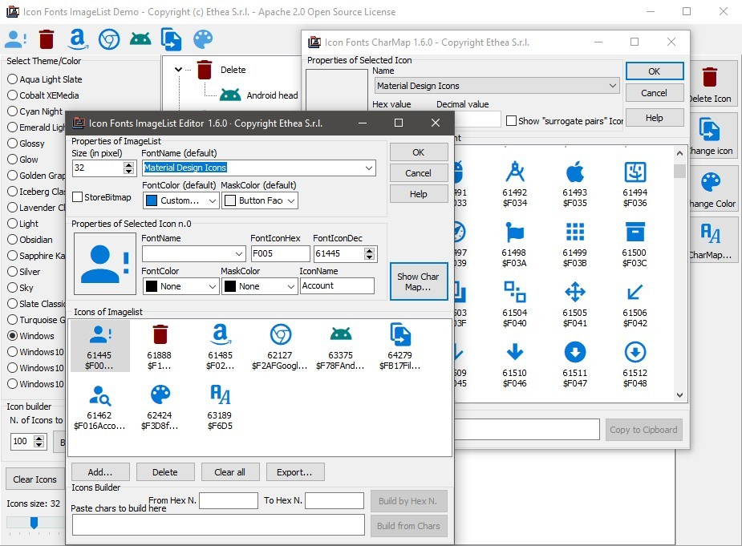
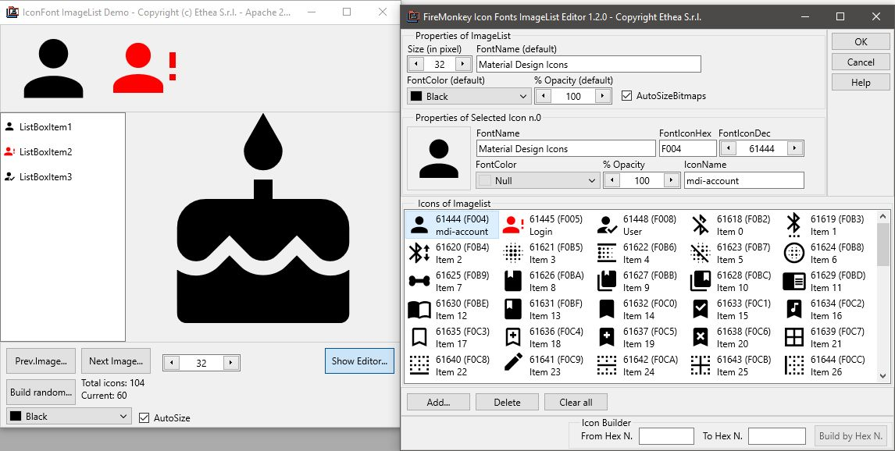

IconFontsImageList


Four advanced components to simplify use of Icon Fonts as images and ImageList (for VCL and FMX). Full support for High-DPI apps. Rendering optimized with GDI+
| Component |
Description |
|
TIconFontsImageCollection is collection of “Icon Fonts” for Delphi to provide a centralized list of images for IconFontsVirtualImageList (only for VCL) |
|
TIconFontsVirtualImageList is a special “virtual” ImageList for Delphi linked to an IconFontsImageCollection (only for VCL) to simplify use of “Font Icons” (resize, color and more…) |
|
TIconFontImage is an extended Image component for Delphi (VCL+FMX) to show any Icon Font directly or included into a an IconFontsImageList with all functionality (stretch, color, opacity and more…) |
|
TIconFontsImageList is an extended ImageList for Delphi (VCL+FMX) to simplify use of Icon Fonts (resize, color and more…). Use only for simple application with one form. |
New Setup for automatic installation of components
An “Installer” read-to-use is located in the Release area: Download the Installer.
The Installer automatically detect your Delphi versions, install sources, build and install packages and add source paths.

Installation with DPM (Delphi Package Manager)
The library is also published on delphi.dev as the package EtheaDev.IconFontsImageList (Delphi XE3 to 13, Win32 and Win64): you can install it with DPM, the Delphi Package Manager, as an alternative to the Setup. From the IDE, right click on your project in the Project Manager and choose Manage DPM Packages, or from the command line:
dpm install EtheaDev.IconFontsImageList <path of your project>.dproj
DPM downloads the package, builds it for the Delphi version and the platforms of your project and adds it to the project.
Documentation
Follow the Project Site to known how to use those components to modernize your Delphi VCL or FMX applications with scalable, colored and beautiful icons.
Notice: the Installer is not able to automatic compile and install for Delphi 7: you must install it manually as explained here

Related links: https://www.embarcadero.com/ - https://learndelphi.org/
Sample image of VCL version

Sample image of FMX version

Very important notice:
TVirtualImageList (available from D10.3) and TIconFontsVirtualImageList both use images from TIconFontsImageCollection. An important difference is that TVirtualImageList may use and create only a subset of the images in the collection, whereas TIconFontsVirtualImageList creates all images of the collection everytime it is needed (e,g. DPI change), which is slower and consumes more memory.
We advise that TIconFontsVirtualImageList should be used only for versions of Delphi before 10.3. For recent versions of Delphi the recommended combination should be TIconFontsImageCollection + TVirtualImageList. Don't forget also the importance of TVirtualImageList.PreserveItems when you have a large ImageCollection with many linked Actions. Without setting this property to “True”, everytime you add or remove an icon in the collection, you have to check and change the ImageIndex of all the Actions.
Demos uses Material Design Icon Fonts
All demos included in this repo uses the Material Design Font available here. (the file “materialdesignicons-webfont.ttf” is renamed to “Material Design Icons.ttf” and included into Demo\Fonts folder)
Warning: “Material Font” has changed again
Take care of changed Font file used in the Demos starting from v3.3.2 release, as explained here.
RELEASE NOTES:
11 Nov 2026: version 3.4.4 (VCL+FMX)
- Compatibility with Delphi 13.2
15 Oct 2026: version 3.4.3 (VCL+FMX)
- Added support for Delphi 13.2
- Fixed TIconFontsImageListBase.GetNameByIndex
- Added demo for Delphi 13
19 Aug 2025: version 3.4.2 (VCL+FMX)
- Updated Packaged for Delphi 13 and 64bit IDE
25 Mar 2025: version 3.4.1 (VCL+FMX)
- Fixed Setup conflict with SVGIconImageList components
- Updated Packages for Delphi 12.3
12 Mar 2025: version 3.4.0 (VCL+FMX)
- Updated Packages for Delphi 12.3 and 64bit IDE
- Added Library Description in Delphi Splash and About forms
- Added easy IconFontsImageList_Setup.exe
15 Sep 2024: version 3.3.3 (VCL+FMX)
- Updated Packages for Delphi 12.2
03 May 2024: version 3.3.2 (VCL+FMX)
- Fixed Slow loading of material design font in Windows 11
- Added support for Delphi 12.1
- Removed old font “Material Design Icons Desktop.ttf”
- Added new font “Material Design Icons.ttf”
- Removed old unit form Font Name conversion: MaterialFontConvert.pas
- Updated list of Icons Names/CodePoint to version 7.4.47 into Source\Fonts\Icons.MaterialDesign.pas
- Added Search of Icons by Name in Custom CharMap
09 Nov 2023: version 3.3.1 (VCL+FMX)
- Added support for Delphi 12
28 Feb 2023: version 3.3.0 (VCL+FMX)
- Updated packages for Delphi 11.3
- Feature Request #43: delete all selected icons into editor
15 Sep 2022: version 3.2.2 (VCL+FMX)
- Updated packages for Delphi 11.2
17 Jun 2022: version 3.2.1 (VCL+FMX)
- Updated Material Design Desktop Font to version 7.0.01
- Updated MaterialDesign fonts (7000 icons)
17 Mar 2022: version 3.2.0 (VCL+FMX)
- Updated support to Delphi 11.1
- Updated Library suffix for Delphi 10.4 and 11 to (auto)
24 Nov 2021: version 3.1.0 (VCL+FMX)
- Updated MaterialDesign fonts
- Updated component editors form light or dark theme
27 Aug 2021: version 3.0.0 (VCL+FMX)
- FMX version aligned to VCL
- Completed support for Delphi 11 Alexandria
- aligned demo font “Material Design Icons Desktop” to ver. 6.1.41
20 Jul 2021: version 2.6.0 (VCL) and 1.8.0 (FMX)
- Updated font material design to 6.0.29 version
- Added support for Delphi 11 Alexandria (packages)
23 Jan 2021: version 2.5.1 (VCL) and 1.7.1 (FMX)
- Fixed check for unassigned Imagelist loading component
- Fixed #41 AV using CharMap
17 Jan 2021: version 2.5.0 (VCL) and 1.7.0 (FMX)
- Updated Material Design Icons Desktop.ttf to 5.9.17 version
- Updated IconFontImage to supporto Width, Height and Zoom
- Update GUI Demo with zoom for older Delphi versions
- Opacity stored only if different from 1
- Fixed TIconFontsImageListBase.GetIndexByName
12 Dec 2020: version 2.4.0 (VCL) and 1.6.1 (FMX)
- Fixed problems changing FontColor of ImageList
06 Dec 2020: version 2.4.0 (VCL) and 1.6.0 (FMX)
- Added width and height property for FMX (if different from size)
- Added Zoom attribute for icons (VCL and FMX)
16 Sep 2020: version 2.3.1 (VCL) and 1.5.1 (FMX)
- Fixed issue #37 (Partly ugly antialiasing effects)
05 Sep 2020: version 2.3 (VCL) and 1.5.1 (FMX)
- Added demo with VirtualImageList form D10.3 and D10.4
- Refactoring to move methods from IconFontsImageList to IconFontsImageCollection
- Update IconFontImage to connect also to a VirtualImageList
- Fixed some packages and demos for older Delphi versions (Delphi7, DXE3, DXE6, DXE8)
04 Sep 2020: version 2.2.2 (VCL) and 1.5.1 (FMX)
- Export Icons in png files into component editor
- Updated “Material Design Font Desktop.ttf” font and metadata
27 Aug 2020: version 2.2.1 (VCL) and 1.5.0 (FMX)
- Complete refactoring for full support of High-DPI
- New IconFontsImageCollection component
- New IconFontsVirtualImageList component
- Redesigned component editor to support Categories for icons
- New support for native VirtualImageList (from D10.3)
- Fixed some issues
15 July 2020: official 2.1 (VCL) and 1.5 version (FMX)
- Fixed rendering on TButton!
- Fixed rendering for Delphi7
19 June 2020: official 2.0 (VCL) and 1.5 version (FMX)
- Added GDI+ support (from DXE6)
- Added new TIconFontsImage component
- Added Width, Height, DisabledFactor, Opacity properties for TIconFontsImageList
08 June 2020: official 1.10 (VCL) and 1.5 version (FMX)
- Added IconManager and an example of metadata info form Material Design Icons Desktop Font
- Updated CharMap with metadata support
- Support for Delphi 10.4 Sydney
17 May 2020: official 1.9 (VCL) and 1.4 version (FMX)
- Added component “menu option” to convert “Material” Icons from old font “Material Design Icons” (materialdesignicons-webfont.ttf) to new font “Material Design Icons Desktop” (Material Design Icons Desktop.ttf)
- Restored old font “Material Design Icons” only for use with Delphi 7 and Delphi 2010.
- Fixed FMX components and demos to compile with mobile platforms
13 May 2020: official 1.8 (VCL) and 1.3 version (FMX)
- Changed font used in the Demos to preserve future changes of char/mapping.
- Added preview for new “Material Design Icons Desktop.ttf” in Demo/Fonts folder.
9 May 2020: official 1.2 version (FMX)
- Fixed component editor and packages for Delphi 10.1 and 10.2
7 May 2020: official 1.1 version (FMX)
- Added Component Editor for FMX version: look here….
- Fixed some problems in FMX version
- Updated Demo for FMX version
2 May 2020: official 1.7 version (VCL)
- Added utilities to manage Disabled and Hot Imagelist
- Added a Video tutorial in Wiki section
12 April 2020: official 1.6 version (VCL)
- Added a custom CharMap form (VCL only) to show and collect icons more easily: look here….
27 March 2020: official 1.5 version (VCL) and first 1.0 version (FMX)
- Added support for Icon Fonts that contains surrogate pair characters (VCL & FMX)!
- Now you can use all the icons present in any “font collection” that containts those special characters: look here….
24 March 2020: official 1.4 version (VCL) and first Beta version (FMX)
- Improved performances into IDE (VCL)
- Added two new FMX components: TIconFontsImageListFMX and TIconFontImageFMX (beta)
- Added two demos for TIconFontsImageListFMX and TIconFontImageFMX
- Minor fixes (VCL)
30 January 2020: official 1.3 version
- Added support for Delphi7 (generally for no Unicode version)
- Fixed when adding an icon without specifying a character
- Added SaveToFile method to save the icons into a single Bitmap
- Added Export button To ImageList Editor
- Added OnMissingFont event
21 January 2020: official 1.2 version
- Added support for DXE8
- Demos with various VCL Styles
- Utility to update automatically IconFonts color by active VCL Style
- Increased performance when switching VCL Style at runtime
- Minor fixes
13 December 2019: official 1.1 version
- Fixed some problems when adding or deleting icons into Extended Editor and Collection Editor
- Added support for building icons from/to Chars (into Extended Editor)
- Fixed some minor problems
27 November 2019: first stable version 1.0:
- The component TIconFontsImageList with advanced component editor.
- Demo to show how to change the size, fonts and colors of the icons.
- Very high performance for building hundreds of icons.
- Support from Delphi 2010 to 10.3 Rio
Inspired by the “Font Icon Editor” project by Luca Minuti:
https://github.com/lminuti/FontIconEditor
License
Copyright (c) 2019-2026 Ethea S.r.l.
Licensed under the Apache License, Version 2.0 (the “License”): you may not use this software except in compliance with the License. Unless required by applicable law or agreed to in writing, software distributed under the License is distributed on an “AS IS” BASIS, WITHOUT WARRANTIES OR CONDITIONS OF ANY KIND, either express or implied. See the License for the specific language governing permissions and limitations under the License.